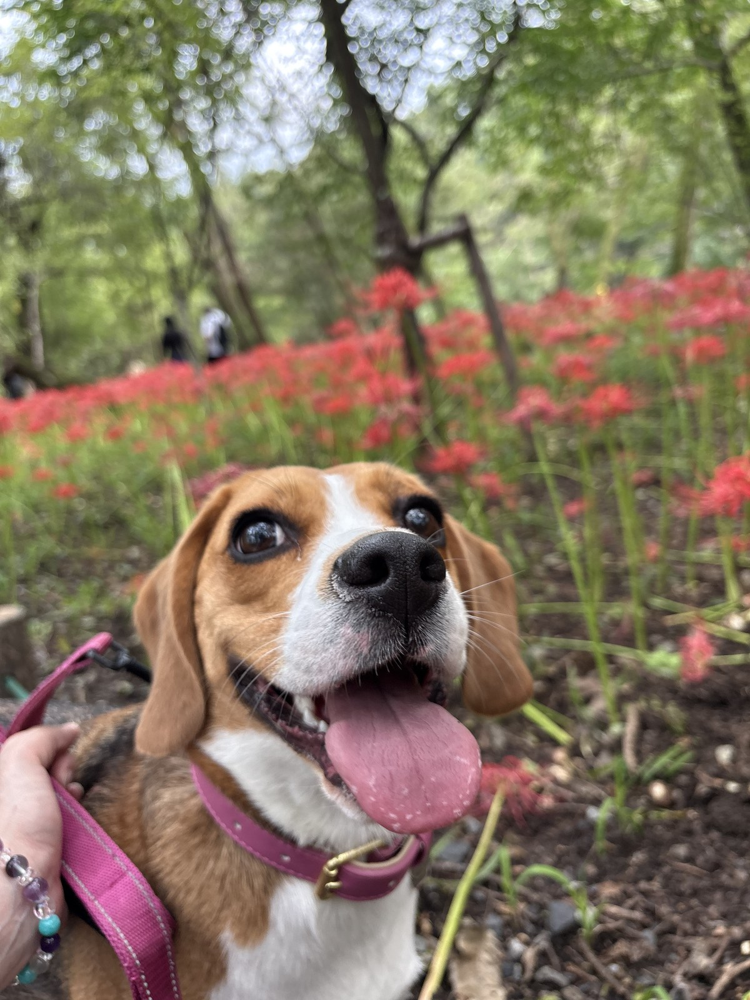

ペットシッター・お散歩代行
お留守番のあいだも、
獣医師の目でお世話します。
旅行やお仕事のときだけでなく、ご家族の介護や体調のために手が回らないとき。 高齢の子、持病のある子、投薬が必要な子も、慣れた自宅のままお預かりします。 動物病院で経験を積んだ獣医師が伺うので、いつもと違う様子にも早く気づけます。
LLINEで相談するできること。
- ペットシッター：食事・水・トイレのお世話と、体調・様子の観察。終了後にLINEでご報告します。
- お散歩代行：獣医師の視点で歩き方や息づかいを見ながら、その日の体調に合わせて距離を調整します。
- 投薬・皮下点滴のサポート：かかりつけの先生の指示のもとで対応します。
- 通院同行：かかりつけ医への送り迎え・付き添い（内容によりご相談）。
- ご高齢のご家族の代わりに：離れて暮らすご家族からのご依頼も承ります（飼い主さまご本人との契約が必要です）。
すべて税込・
キャッシュレス決済です。
初回はまず「初回カウンセリング（¥7,700／最大60分）」でご自宅に伺い、お世話の方法を確認します
ご利用内容に合わせたお見積もりを、初回カウンセリングでお出しします
お支払いはキャッシュレスのみ（カード／Apple Pay／Google Pay）
繁忙期（年末年始・GW・お盆）は割増（+20%）をいただいています
お散歩代行は、警報・注意報の発令時を除き雨天決行（雨天によるキャンセル料は無料）
はじめての方も、
無理なく一歩ずつ。
預け先が、
見つかりにくくなっていませんか。
長い留守番が不安
シッターに断られた
犬の散歩に行けていない
体調を崩してしまう
お願いしたい
気づいてもらえるか心配
見せていただきます。
お世話ができる、だけでは
足りない場面があります。
獣医師が伺うので、医療的なケアが必要な子や、体調の変化を見逃したくない子にも対応できます。
一般的なペットシッターは、食事・トイレ・遊びといった日常のお世話が中心です。 おおたはら動物診療所のペットシッターは、それに加えてかかりつけ医の指示のもとでの投薬や皮下点滴にも対応し、 毎回、体調の観察結果をご報告します。
「投薬が必要になって、これまでのシッターさんに断られてしまった」——そうしたご相談を、よくいただきます。
こんなご依頼が、
多くあります。
少しだけ、
自己紹介させてください。
獣医師の大田原こと美です。日本大学 獣医学科を卒業後、沖縄・愛知の動物病院に勤務し、愛知では往診も 担当してきました。現在は東京都内2施設・埼玉県内の動物病院に勤務し、いずれの施設でも行動診療を 担当するかたわら、埼玉県所沢市を拠点に訪問でのペットシッター・お散歩代行を行っています。
慣れた環境で過ごすことが、動物にとっての安心につながると考えています。お世話をしながら、その子の「いつも通り」を守ります。
気になることは、
事前に。
読みもの。
まずは、
空き状況のご相談から。
ご希望の日時とお世話の内容を、
LINEでお気軽にお知らせください。
ペットシッター・お散歩代行では、診断や新たな処方は行いません。投薬・皮下点滴はかかりつけの動物病院の指示のもとで対応します。